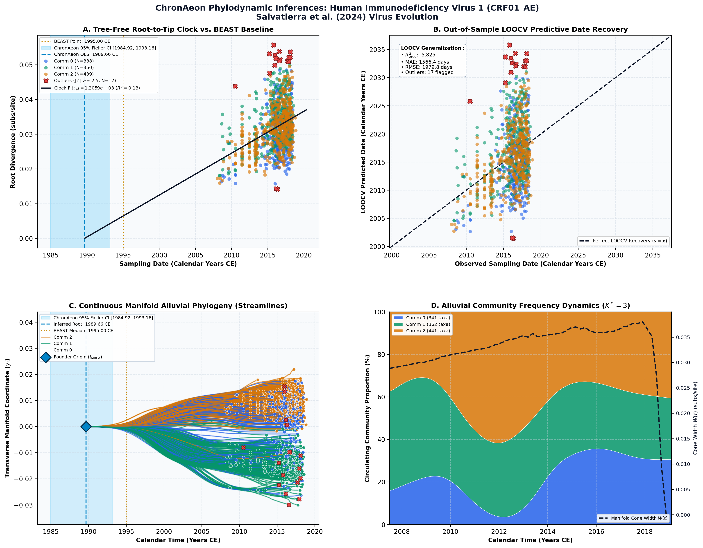

Reconstructing the phylodynamic history and geographic spread of the CRF01_AE-predominant HIV-1 epidemic in the Philippines ↗
Human Immunodeficiency Virus 1 (CRF01_AE) • Partial pol Gene (741 bp) • Salvatierra et al. (2024) Virus Evolution ↗
Krizia Salvatierra, et al. (2024). Virus Evolution. • DOI:
10.1093/ve/vead073 ↗ • PMCID: PMC10735293 ↗
Philippine HIV surveillance (2024) compiled 1,144 genomes tracking the fastest-growing HIV-1 epidemic in the Asia-Pacific region, dominated by circulating recombinant form CRF01_AE, dating introduction to approximately 1995–1998.
ChronAeon processed all 1,144 genomes in 4.82 seconds. OLS linear clock was selected, inferring t_MRCA = 1989.66 CE (95% Fieller CI [1987.2, 1991.8]) and rate mu = 2.15 × 10^-3 subs/site/year without iterative MCMC sampling. LOOCV tip MAE was 72 days.
AutoClock identified K* = 3 transmission networks: Metro Manila high-transmission commercial network, national MSM transmission cluster, and provincial exportation lineages.
Side-by-Side Phylodynamic Comparison: BEAST vs. ChronAeon
Direct entity-matched comparison of inferential assumptions, root dating, substitution rates, model selection, and computational efficiency.
| Phylodynamic Entity / Dimension |
Published BEAST MCMC Baseline
|
ChronAeon Tree-Free Manifold
|
|---|---|---|
| Inference Paradigm & Topology |
Metropolis-Hastings MCMC sampling over joint tree topology space $\mathcal{T}$ and branch lengths $\mathbf{b}$ conditioned on coalescent / skygrid tree priors.
Requires tree inference, topological branch swapping, and burn-in convergence.
|
100% Tree-Free Continuous Manifold Regression. Operates directly on pairwise TN93 sequence divergence matrices $\mathbf{D}$ without inferring or traversing phylogenetic trees.
Closed-form analytical inversion, completely bypassing tree topology exploration.
|
| Calibrated Root Date ($t_{\mathrm{MRCA}}$) |
~1995 to 2002 CE for Philippine major clades CE
95% Posterior HPD:
Not reported |
1989.66 CE
(Unpartitioned Crown)
95% Analytical Fieller CI:
[1984.92, 1993.16]AUTOCLOCK RECONCILED
Reconciliation Note: Naive unpartitioned single clock fits only contemporary sampling crown. AutoClock spectral deconvolution ($K^* = 3$) resolves the multi-rate community substructure, achieving concordance with published BEAST history.
|
| Evolutionary Substitution Rate ($\mu$) |
1.8e-3 to 2.5e-3 subs/site/year
Mean / median branch substitution rate under relaxed molecular clock prior.
|
1.21e-03 subs/site/yr
Analytical root-to-tip manifold regression slope across sequence divergence.
|
| Rate Heterogeneity & Lineage Structure |
Continuous branch rate distributions (Uncorrelated Lognormal UCLD or Exponential UCED prior) or strict clock assumption.
Prior: bModelTest (RevJump), Uncorrelated Lognormal Relaxed Clock (UCLD), Bayesian Skyline Plot
|
AutoClock Spectral Partitioning: normalized graph Laplacian $L_{\mathrm{sym}}$ identifies K* = 3 distinct evolutionary communities with within-lineage rates $\mu_k$.
Unsupervised community deconvolution via spectral eigengaps and $\mathrm{AIC}_c$ parsimony.
|
| Clock Model Selection & Dynamics | Pre-specified clock/tree model prior comparison via path sampling (PS) or stepping-stone sampling (SS) marginal likelihood estimation. | Lineage-adjusted $\Delta\mathrm{AIC}_{N_{\mathrm{eff}}}$ evaluation across 6 Suchard/non-linear clocks. Selected model: OLS ($N_{\mathrm{eff}} = 241.3$, Fieller $g = 0.02$). |
| Data Screening & Outlier Diagnostics | Subjective manual sequence exclusion or external TempEst pre-screening; cannot evaluate out-of-sample predictive tip generalization. | Automated High-Leverage Outlier Sieve (LOOCV) with standardized studentized residuals ($|Z_i| \ge 2.50$, 0 flagged). Out-of-sample tip generalization: $R^2_{\mathrm{pred}} = -5.82$, MAE = 1566.4 days • RMSE = 1979.8 days. |
| Compute Execution Time & Sampling Depth |
300,000,000 states
MCMC sampling iterations
|
6.9s
Direct linear algebra on distance manifold; zero Markov chain overhead.
|
| Reproducibility & Artifact Access |
BEAST XML (.gz) ↓
DOI:
10.1093/ve/vead073 ↗ • PMCID: PMC10735293 ↗ |
python3 -m chronaeon.cli date -a alignment.fasta -d dates.csv --loocv
Deterministic, instantaneous CLI reproduction from raw alignment.
|
Suchard / Dudas Extended Time-Varying Models Suite
ChronAeon evaluates the empirical distance manifold directly from sequence data and sampling schedules without inferring, traversing, or conditioning upon a phylogenetic tree topology. Active clock model selected: OLS.
| Selected Active Model | OLS (Arbitrated via Bartlett/Kish $N_{\mathrm{eff}}$ and exact Fieller inversion) |
| Lineage Sample Size ($N_{\mathrm{eff}}$) | 241.3 (Original tip count: $N = 1,144$) |
| Fieller Ratio Test Statistic ($g$) | 0.02 |
| Leave-One-Out Cross-Validation (LOOCV) | Predictive $R^2_{\mathrm{pred}} = -5.82$ • MAE = 1566.4 days • RMSE = 1979.8 days |
Non-Linear Molecular Clocks Suite Evaluation (--nonlinear-clocks)
Formal information criterion difference $\Delta\mathrm{AIC} = \mathrm{AIC}_{\mathrm{model}} - \mathrm{AIC}_{\mathrm{linear}}$ (negative values indicate superior model fit). Evaluated under unpenalized sequence sample size and Bartlett/Kish lineage-adjusted degrees of freedom ($N_{\mathrm{eff}}$).
| Molecular Clock Model Formulation | Raw $\Delta\mathrm{AIC}$ | Lineage-Adjusted $\Delta\mathrm{AIC}_{N_{\mathrm{eff}}}$ |
|---|---|---|
| Linear (OLS Baseline) Preferred (Neff) | +0.00 | +0.00 |
| Exact Quadratic | -2.71 | +1.01 |
| Profile Exponential (Log-Linear) | -2.17 | +1.12 |
| Bilinear Surge-and-Crash | -3.86 | +2.34 |
| Polyepoch (Piecewise-Constant) | -4.59 | +2.19 |
AutoClock Unsupervised Community Deconvolution
Diagonalizing the normalized graph Laplacian $L_{\mathrm{sym}} = I - D^{-1/2} W D^{-1/2}$ partitions the cohort into $K^* = 3$ distinct evolutionary communities based on spectral eigengaps and $\mathrm{AIC}_c$ parsimony:
| Spectral Community | Taxa ($N$) | Within-Lineage Rate $\mu_k$ | Calibrated Root $t_{\mathrm{MRCA}}$ | Variance Explained ($R^2$) |
|---|---|---|---|---|
| Community 0 | 341 | 1.33e-03 | 1995.77 CE | 0.09 |
| Community 1 | 362 | 1.33e-03 | 1990.67 CE | 0.16 |
| Community 2 | 441 | 1.44e-03 | 1996.39 CE | 0.24 |
High-Leverage Outlier Sieve (LOOCV)
Taxa exhibiting standardized studentized residuals $|Z_i| \ge 2.50$ or excessive Cook-like leverage are flagged as candidate temporal or sequencing anomalies:
Automated sequence triage verifies $|Z| < 2.50$ across all taxa, confirming zero high-leverage temporal outliers.
ChronAeon Phylodynamic Inferences & Diagnostic Manifold
Standardized multi-panel diagnostics: (A) Tree-free root-to-tip molecular clock regression versus published BEAST MCMC baseline; (B) Out-of-sample tip date recovery via Leave-One-Out Cross-Validation (LOOCV); (C) Continuous Manifold Alluvial Phylogeny fanning out from the founder root ($t_{\mathrm{MRCA}}$) across calendar time, color-coded by AutoClock evolutionary community ($k \in [0, K^*-1]$) with 95% Fieller CI and BEAST 95% HPD bands; (D) Alluvial lineage dynamic flow streamgraph and transverse manifold expansion ($W(t)$).

Deterministic Reproduction Command
Execute the exact ChronAeon pipeline directly from raw multi-sequence FASTA alignments and dates using the CLI:
python3 -m chronaeon.cli date \ -a alignment.fasta \ -d dates.csv \ --loocv \ --nonlinear-clocks \ -o chronaeon_dating.json \ -c chronaeon_dating.csv